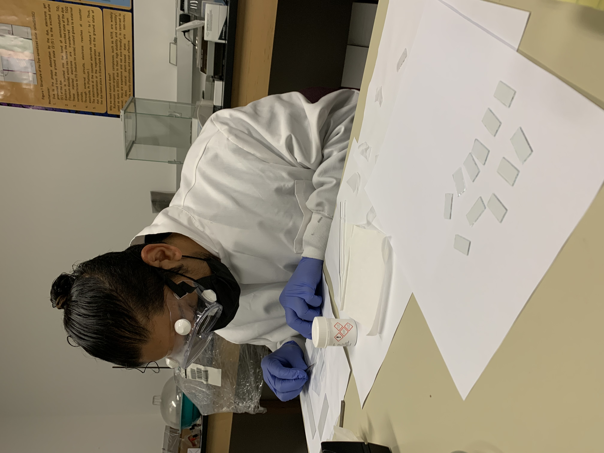
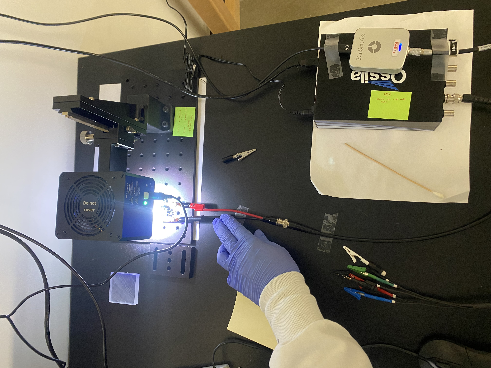
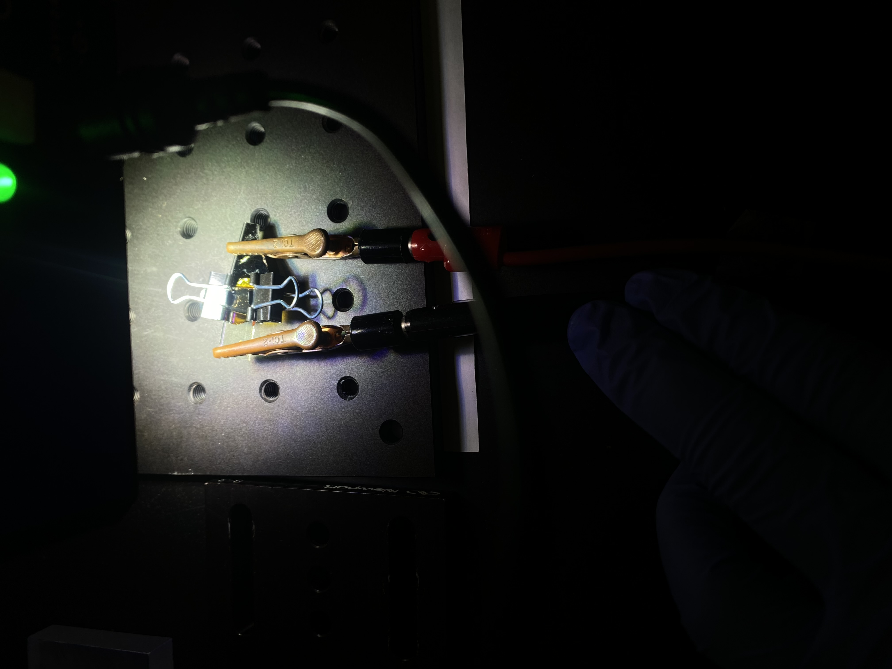

Navin Bhattarai
Navin Bhattarai
Navin Bhattarai
Navin Bhattarai
Computational and experimental work in thermal-fluid systems and renewable energy.
Adjoint-based topology optimization of flow-channel geometries for battery cold-plate thermal management — up to 15.7% pressure-drop reduction via corner-curvature optimization, using OpenFOAM.
Click to view details →
Fabricated and tested 30 lab-scale DSSCs using beetroot- and sumac-derived natural dyes; the best-performing cell reached 0.099% efficiency and a 55.2% fill factor.
Click to view details →SURGE Program, Undergraduate Researcher · May 2026 – Present · PI: Dr. Xianglin Li · Washington University in St. Louis
This project applies CFD and topology optimization to flow-channel geometries for battery cold-plate thermal management, targeting reduced pressure drop while maintaining flow uniformity — work that sits at the intersection of thermal-fluid systems, numerical methods, and computational mechanics.
Active, ongoing research — extending the adjoint-based method to more complex design problems.


Research Assistant, Department of Physics · Feb 2024 – Aug 2025 · PI: Dr. Rasanjali Jayathissa · Truman State University
Investigated beetroot- and sumac-derived natural dyes as sustainable alternatives to conventional metal-complex sensitizers in dye-sensitized solar cells (DSSCs) — a lower-cost, more sustainable path to solar energy conversion than traditional silicon panels or synthetic sensitizers.
I gratefully acknowledge the mentorship and guidance of Dr. Rasanjali Jayathissa during this research, conducted at Truman State University.